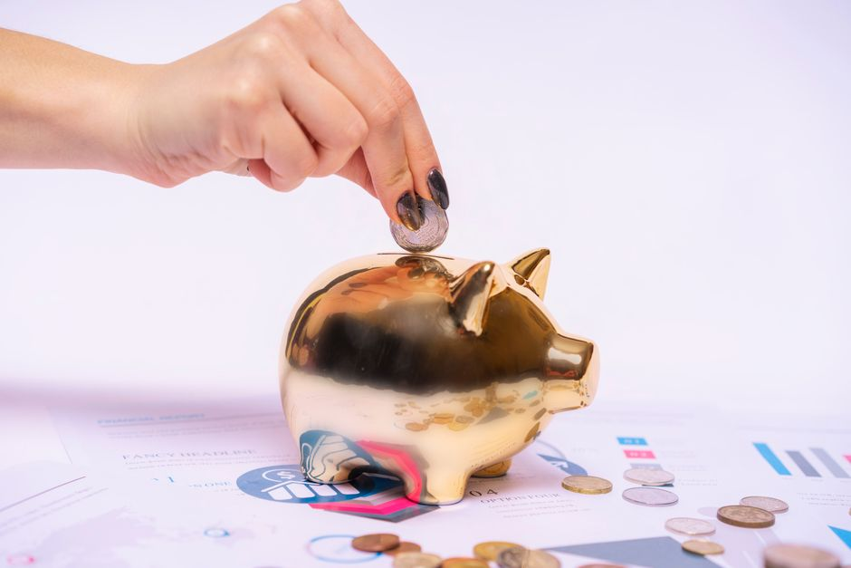

월 10만원 넣으면 3년 뒤 1,440만원 — 희망저축계좌 Ⅰ·Ⅱ 2026 매칭표와 신청 마감

발행일 2026-10-07
결론부터 하겠습니다. 월 10만원씩 3년을 넣으면 통장에 Ⅰ은 1,440만원, Ⅱ는 1,080만원이 쌓입니다(이자 별도). 정부가 매달 통장에 따로 적립해주는 근로소득장려금 때문인데, 이 돈은 조건을 채워 만기 해지해야만 내 돈이 됩니다. 2026년은 Ⅰ의 6·9·11월 모집이 목표 인원 달성으로 중단됐고, Ⅱ도 7월·10월 회차가 같은 이유로 중단됐습니다. 남은 길은 복지로 온라인과 주민센터 방문 신청이며, 잔여 회차는 수시로 확인해야 합니다.
30초 요약
| 항목 | 내용 |
|---|---|
| 대상 | Ⅰ — 일하는 생계·의료급여 수급가구(가구소득 중위 40% 이하, 근로·사업소득 중위 40%의 60% 이상) Ⅱ — 일하는 주거·교육급여 수급가구 및 차상위계층(소득인정액 중위 50% 이하) |
| 내는 돈 | 매월 10만~50만원 본인저축. 매월 22일(마감일)까지 입금해야 그 달로 인정 |
| 정부 매칭 | Ⅰ — 매월 30만원 적립(3년 총 1,080만원) Ⅱ(2025년 이후 가입자) — 1년차 월 10만원·2년차 20만원·3년차 30만원(3년 총 720만원) |
| 만기 수령 | 본인저축 원금 + 매칭금 + 이자. 매칭금을 받으려면 3년 근로활동 지속 + 탈수급(Ⅰ) / 교육 10시간 이수 + 자금사용계획서 제출(Ⅱ) |
| 신청 | 복지로 온라인 또는 주소지 읍면동 주민센터 방문. 가구당 1명 |
| 2026 모집 | Ⅰ — 3월 3~13일 종료, 6·9·11월 회차 중단 Ⅱ — 2월 2~24일 종료, 7월·10월 회차 중단 |
1. 누가 가입할 수 있나 — '일하는'이 붙은 수급가구
희망저축계좌는 기초생활보장 제도와 붙어 있습니다. Ⅰ은 생계·의료급여를 받으면서 근로·사업소득이 있는 가구용이고, Ⅱ은 그보다 한 단계 위인 주거·교육급여 수급가구와 차상위계층용입니다. 2026년 기준 중위소득과 소득기준은 아래와 같습니다.
| 구분(월) | 1인 | 3인 | 4인 | 6인 |
|---|---|---|---|---|
| 기준 중위소득 | 2,564,238원 | 5,359,036원 | 6,494,738원 | 8,555,952원 |
| Ⅰ 가입·유지 기준(중위 40%) | 1,025,695원 | 2,143,614원 | 2,597,895원 | 3,422,381원 |
| Ⅱ 가입 기준(중위 50%) | 1,282,119원 | 2,679,518원 | 3,247,369원 | 4,277,976원 |
여기서 헷갈리기 쉬운 것이 두 가지 있습니다. 첫째, Ⅰ은 가입할 때만 통과되면 되는 게 아닙니다. 3년간 근로·사업소득을 유지해야 하고, 상한은 중위 100% 이하입니다. 둘째, 국가·지자체가 인건비를 전액 지급하는 재정지원 일자리(공공근로)나 노인·장애인 일자리 소득은 근로소득으로 인정되지 않습니다. 대학 근로장학금, 실업급여, 육아휴직수당도 가입 불가 사유로 명시돼 있습니다.
2. 실제로 얼마가 모이나 — 3년 계산표
매월 본인저축 10만원으로 고정했을 때의 최소 적립 구조입니다. 이자는 별도이고, 매칭금은 만기 조건을 채워 '지급해지'해야만 받을 수 있습니다.
| 본인저축 3년 | 정부 매칭 3년 | 합계(이자 별도) | |
|---|---|---|---|
| Ⅰ (매월 30만원) | 360만원 | 1,080만원 | 1,440만원 |
| Ⅱ (1년차10·2년차20·3년차30) | 360만원 | 720만원 | 1,080만원 |
Ⅱ는 2024년까지 가입자가 매월 10만원 매칭(3년 총 360만원)이었는데, 2025년부터 연차별로 10·20·30만원으로 올랐습니다. 2025년 이후 가입자 기준 3년 매칭 총액은 1년차 120만원 + 2년차 240만원 + 3년차 360만원 = 720만원이고, 합계는 1,080만원입니다. 본인저축을 50만원까지 넣으면 원금은 5배가 되지만 매칭금은 10만원 저축자를 기준으로 고정되므로, 레버리지 비율을 최대로 쓰려면 10만원이 정답입니다.
3. 제외·주의 — 매칭금이 증발하는 3가지
- 본인적립금 12개월 누적 미납. 한 달을 걸으면 그 달 매칭금은 그대로 적립되지 않습니다. 자동이체 날짜는 매월 22일 마감 전에 맞춰 두세요(입금 인정 기간은 전월 23일~당월 22일).
- 소득 6개월 연속 하한 미달(Ⅰ). 실직·질병·사고 등 부득이한 사유가 생기면 기다리지 말고 '적립중지'(총 6개월 이내)를 미리 신청해야 합니다. 중지 없이 버티면 환수해지, 장려금은 전액 국고로 환수되고 내 원금만 돌려받습니다.
- 압류·가압류. 통장이 압류되면 중도환수해지, 정부지원금은 미지급입니다. 채무 부담이 크다면 가입 전 상담이 필요합니다.
- 중복참여 금지. 서울시 희망두배 청년통장, 경기도 청년 노동자 통장, 청년내일채움공제, 미래행복통장 등에 참여 중이거나 과거에 혜택을 받은 가구는 가입할 수 없습니다. 다만 꿈나래·디딤씨앗통장(아동 대상)은 중복 가능합니다.
반대로 조건을 다 채우면 Ⅰ은 본인적립금 + 매칭금 + 추가지원금(탈수급장려금, 자활근로 참여자는 내일키움장려금·수익금)을 전액 받습니다. Ⅰ에서 탈수급에는 실패했지만 3년을 다 채운 경우, 1회에 한해 매칭금의 5%만 받는 '일부지급해지'가 있습니다. 환수해지·중도지급해지라도 사유에 따라서는 다시 가입할 수 있습니다.
4. 서류
- 신분증
- 참여 신청서(주민센터 구비)
- 근로확인서류 — 재직증명서, 사업자등록증, 근로활동 및 소득신고서, 급여명세서 중 현재 상황 증빙 가능한 것
5. 순서
- 유형 정하기 — 생계·의료급여면 Ⅰ, 주거·교육급여나 차상위면 Ⅱ. 애매하면 소득인정액으로 재확인(중위 40%·50% 표).
- 유사 상품 중복 점검 — 희망두배·청년 노동자 통장·내일채움공제 이력. 있으면 이 글에서 끝내고 해당 사업을 먼저 정리해야 합니다.
- 모집 회차 확인 — 2026년은 Ⅰ 6·9·11월, Ⅱ 7·10월이 목표 인원 달성으로 중단됐습니다. 복지로·주민센터에서 현재 열려 있는 회차를 확인합니다.
- 신청 — 복지로(bokjiro.go.kr) 온라인 또는 주소지 읍면동 주민센터 방문. 가구당 1명.
- 자동이체 세팅 — 선정 통보를 받으면 즉시 매월 22일 마감 전 자동이체. 이 한 세팅이 1,080만원을 지킵니다.
- 위기 때 적립중지 신청 — 실직·질병 발생 즉시 주민센터에 사전 신청. 미루면 환수해지입니다.
6. 안 될 때
- 모집이 전부 중단됐을 때. 다음 연도 1~3월 1차 모집을 노리되, 그 사이에 청년내일저축계좌(만 15~39세, 가구소득 중위 50% 이하, 월 10만원 저축에 정부 30만원 정액 매칭)가 열려 있는지 복지로에서 함께 확인하세요. 다만 청년내일저축계좌는 2026년부터 차상위 초과자(중위 50~100%) 신규 모집이 중단됐습니다.
- 근로소득으로 잡히는데 사업소득이 없는 경우. 일용·프리랜서 소득도 근로·사업소득 신고 이력으로 확인됩니다. 소득신고 자체가 없으면 '일하는 가구' 요건에서 막히므로 근로활동 및 소득신고서로 먼저 정리합니다.
- 통장 압류·채무 문제. 가입 전에 주민센터 사례관리 상담에서 압류 여부를 먼저 확인합니다.
- 지원금 사용처가 막막할 때. 만기 지원금은 주택 구입·임대, 본인과 자녀의 고등교육·기술훈련, 창업·운영자금 등 자립 용도로 써야 하고, Ⅱ 중도지급해지 때는 사용 용도 증빙을 내야 합니다.